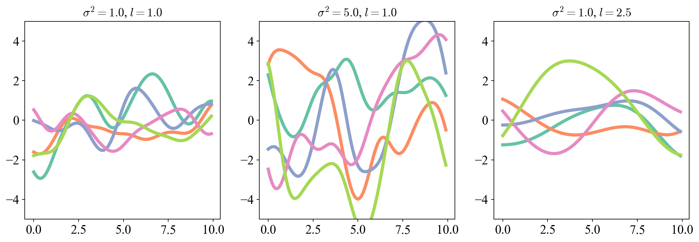

import numpy as npimport matplotlib.pyplot as pltimport matplotlib as mplimport pandas as pdimport torchimport torch.nn as nn#The script GP.py can be found on my github: https://github.com/anooppraturu/gaussian_processesimport GPmpl.rcParams.update({"font.family": "serif","font.serif": ["Computer Modern Roman", "Times New Roman", "DejaVu Serif"],"mathtext.fontset": "cm","xtick.labelsize": 16,"ytick.labelsize": 16,})
Regression is the art of taking data, and finding the function whence they came. Consider for example the dataset shown below plotting the number of miles I have run each week over the last few months. Denoting the week by \(x\) and the number of miles ran by \(y\), we suppose that there is some function \(y=f(x)\) that determines the relationship between these quantities, of which we only see a few samples from. This function could perhaps be a training plan that I am following for a race. Knowing this function can help you interpret data: if you find a good function it can tell you something deeper about the “true” relationship between the variables, like perhaps the specifics of my training plan. It can also help you make predictions: maybe a friend wants to see how busy I’ll be running next week before they reach out to make plans. If they have a good function they can predict how many miles I’ll run next week and decide not to hang out with me :( An example of one possible function is shown in the middle panel. This function is “perfect” in the sense that it reproduces each of our data points exactly. This is actually not so good, because our data is never perfect. For example the GPS on my phone that tracks my mileage on runs has a finite precision, so the numbers reported are not actually the number of miles I ran. Or maybe I got lazy one week and ran fewer miles than I should have for my training plan. Then the number of miles \(y\) would be different than the number predicted by the “true” function \(f(x)\). To remedy this we usually assume that our data come from some function but are corrupted by noise: \(y = f(x) + \epsilon\), where \(\epsilon \sim \mathcal{N}(0, \sigma_n^2)\) are i.i.d normally distributed noise, and the variance \(\sigma_n^2\) is a hyperparameter determining the strength of this noise (the \(n\) here stands for noise, to distinguish this from the plethora of other \(\sigma\)’s that will arise). What this means in practice is that the function we seek doesn’t need to pass exactly through every data point, like the one shown on the right. Including noise is a good idea not only because it’s literally true, but we will see that it also has some appealing mathematical properties.
Figure 1: Left: How many miles I ran per week over the last few months. Middle: One possible regressing function that perfectly interpolates the data. Right: Another possible function which doesn’t interpolate by allowing for noise.
Our task is particularly hard because there are alot of functions to choose from. In fact the space of all possible functions is infinite dimensional! A crude but intuitive way to see this is to consider the Taylor Series expansion of a function: \[
f(x) = \sum_{n=0}^\infty a_n x^n
\]
Each candidate function can then be characterized by its list of Taylor coefficients \(f \leftrightarrow (a_0, a_1, a_2, \ldots)\). This infinite list of numbers is like a vector in an infinite dimenisonal space. Gaussian Process Regression is a framework that provides just enough structure to allow us to make a foray into function space in our search for good functions. The central tool in this framework is something called a Gaussian Process, which is a natural generalization of the multivariate Gaussian distribution that we love so much. We’ll start by reviewing the standard approach to regression using parametric models, but we will focus on a few particular details in order to set the scene for non-parametric models like Gaussian process regression. Next we will use these motivating ideas to define Gaussian Processes, and subsequently see how to cast the problem of regression in this form. We will then spend some time building an intuition for what information the regression formulas encode, and end by applying these techniques to modeling atmospheric CO2 concentration.
1 Bayesian Parametric Regression
One way to get a handle on function space is to parameterize a low dimensional subspace of it. For example linear regression considers functions with only the first 2 terms in the Taylor Series representation mentioned above \[
f_\theta(x) = ax + b
\]
The parameters \(a\) and \(b\) trace out a 2 dimensional space of functions. We denote the set of \(N\) input data points by \(X\) and their corresponding \(y\) values by \(Y\), and let \(\theta\) denote the set of all parameters in the model. The standard Bayesian approach is to use the Gaussian noise model for \(\epsilon\) we mentioned above to write down the likelihood \(P(Y | \theta, X)\) for the data, and then use Bayes theorem to write the posterior distribution for the parameters conditioned on the data: \[
P(\theta | X, Y) = \frac{P(Y | \theta, X)P(\theta)}{P(Y | X)}
\tag{1}\]
This requires us to define a prior distribution \(P(\theta)\) over the parameters, which we will have much more to say about in a moment. From here the typical approach would then be to find the parameter values which maximize their posterior \(\theta^* = \mathrm{argmax}_\theta P(\theta | X, Y)\), and take the function obtained by these parameters \(f_{\theta^*}(x)\)1. The purpose of reviewing this framework is to convey two key takeaways to help set the stage for Gaussian Process Regression.
1.1 What Really Happens When We Predict on a New Point?
Given a new input point \(x^*\) we could obtain simply obtain \(y^* = f_{\theta^*}(x^*)\) as our estimate by evaluating on the posterior maximizing function. A more principled approach would be to utilize the entire structure of the posterior, instead of just its maximum, because this allows us to compute \[
P(y^* | x^*, X, Y) = \int P(y^* | \theta, x^*) \, P(\theta | X, Y) \,d\theta \approx P(y^* | \theta^*, x^*) \, P(\theta^* | X, Y)
\]
The trick is that we can approximate the integral by its value at the maximum posterior, which is why we can simply use \(\theta^*\) (this is rigorously justified as \(N\to\infty\) using the Saddle Point Approximation). This maybe feels a bit circular, but the point is that the object we really care about is \(P(y^* | x^*, X, Y)\): given the pattern of data we have seen before, and the location of the new input, what do we think the new output could be? Our parametric model allows us to approximate this quantity by picking a single set of parameter values: \(\theta^*\). This means we can condition on the data without needing to look directly at it. We normally think about parameters as a tool for wrangling function space into a manageable form by making it low dimensional, but this is not all they do. The parameters \(\theta^*\) act like convenient “buckets” for us to hold information about our data. By sacrificing full generality and restricting our functions to those accesible by our parameters, we are able to store a “summarized” version of our data in the values that the parameters take on. Gaussian Process Regression is a non-parametric model2. In that case when we compute \(P(y^* | x^*, X, Y)\), we will not have convenient “buckets” for us to store information about our data in, and instead we will need to store and look at all of our data whenever we predict on a new point. This is the price we will pay for the fllexibility of not being constrained to a parametric subspace of function space.
1.2 What Really Happens When we Put a Prior on \(\theta\)?
Let’s suppose that we take mean 0 normal priors on both of the parameters of the linear model, so \(a\sim \mathcal{N}(0, \sigma_a^2)\) and \(b\sim\mathcal{N}(0, \sigma_b^2)\). We can clearly think about this as a probability distribution over the 2D space of parameters we have chosen, but there’s a sense in which this is a probability distribution over functions: every sample from the distribution produces an entire function for us. For example, in the figure below on the left we show some functions obtained by sampling parameters from their priors. It looks like a random collection of functions which we have sampled from a “probability distribution over functions”.
Code
# Randomly sample parameters of linear function from priors def gen_random_lin_fn(): a, b = np.random.normal(size=2)returnlambda x: a*x + bxs = torch.arange(-2,2.1,0.1)# Plottingfig, ax = plt.subplots(1, 3, figsize=(15,5))for i inrange(10): f = gen_random_lin_fn() ax[0].plot(xs, f(xs), lw=5, alpha=0.75, c='#8da0cb')fn = gen_random_lin_fn()ax[2].plot(xs, fn(xs), c='#8da0cb', lw=5)ax[1].scatter(xs, fn(xs), c='#66c2a5', s=75)
Figure 2: Left: Functions generated by sampling parameters from the prior on the linear regression model. Middle: Approximation of a function by evaluating it on a grid of points. Right: The same function in the continuum limit.
Can we formalize this intuition? Can we express this probability density not in terms of the parameters, but in terms of the functions themselves, and sample functions directly rather than sample them indirectly via their parameters? One way to make this precise is to think about “sampling a function” as sampling the values that the function takes on when evaluated on its domain. For example we could approximate a function by considering the vector \(\vec{f} = (f(x_1), f(x_2), \ldots, f(x_N))\) evaluated at \(N\) points \(x_i\) evenly spaced between \(\left[-1, 1\right]\). As \(N\to\infty\) the vector \(\vec{f} \to f(x)\), shown in the middle and right respectively of Figure 2. We can then derive the “probability distribution over functions” by deriving the density for \(\vec{f}\) from the prior over \(\theta\). To do this for the linear model, we note that \(\vec{f} = a\vec{x} + b\vec{1}\) where \(\vec{x} = (x_1, x_2, \ldots x_N)\) and \(\vec{1} = (1, 1, \ldots, 1)\). Since \(a\) and \(b\) are normally distributed and \(\vec{x}\) and \(\vec{1}\) are fixed, \(\vec{f}\) is the sum of 2 vectors which are normally distributed in \(\mathbb{R}^N\). In the appendix Section 7.1 we show that the sum of 2 normally distributed vectors must also be normally distributed. A normal distribution is completely characterized by its mean and covariance matrix, so we can derive the probability density for \(\vec{f}\) by directly computing the expecation values \(m_i \equiv \left<f(x_i)\right>\) and \(K_{ij}\equiv\left<(f(x_i) - m_i)(f(x_j)-m_j)\right>\) with respect to \(P(\theta)\). \[
m_i = \left<a \right>x_i + \left<b \right> = 0
\] Thus \[
K_{ij} = \left<f(x_i) f(x_j) \right> = \left<a^2 x_i x_j \right> + \left<ab(x_i + x_j) \right> + \left<b^2\right> = \sigma_a^2 x_i x_j + \sigma_b^2
\] Thus \(\vec{f}\) is distributed as a multivariate normal in \(\mathbb{R}^N\) with mean zero and covariance \(K_{ij}\equiv\sigma_a^2 x_i x_j + \sigma_b^2\). \[
\vec{f} \sim \mathcal{N}(\vec{0}, K_{ij})
\tag{2}\] Let’s visualize a few of these samples below on the left:
Code
# Initialize GP with linear kernellin_GP = GP.GaussianProcess( kernel=GP.PolynomialKernel( m=1, log_c = torch.tensor(0.0), log_variance= torch.tensor(0.0) ), log_noise = torch.tensor(0.0))# Plottingfig, ax = plt.subplots(1, 2, figsize=(10,4.5))for i inrange(5): samp = lin_GP.sample(xs) ax[0].scatter(xs, samp, c='#66c2a5', s=75)for i inrange(5): xrand = torch.tensor(np.random.uniform(-2,2,size=len(xs))) samp = lin_GP.sample(xrand) ax[1].scatter(xrand, samp, c='#66c2a5', s=75)
Figure 3: Left: Samples from our distribution over linear functions on an evenly spaced grid of points. Right: Samples from the same distribution for functions evaluated on a random sample of points.
They look like the samples we got from sampling the parameters directly. Great! A few comments are in order:
Our probability distribution Equation 2 makes no reference the the parameters \(a\) and \(b\). It references the hyperparameters of their distributions \(\sigma_a\) and \(\sigma_b\), which makes sense since the structure of \(P(\theta)\) must determine \(P(\vec{f})\), but we are able to sample functions without any mention of the original parameters which defined these functions.
We define the kernel function\(K(x, x') \equiv \sigma_a^2 x x' + \sigma_b^2\) as the function which takes 2 input points and returns the covariance with respect to the prior \(\left<f(x)f(x')\right>\) of the function evaluated at those two points. The kernel is doing the heavy lifting here. This is what defines our distribution, and encodes the fact that samples from it should be linear. As we get deeper into the subject, it will become apparent that the kernel is the star of the show.
Nothing in our derivation depended on the points \(x_i\) being evenly spaced. We could take \(x_i\) to be randomly sampled and the resultant \(\vec{f}\) would still look linear, as shown in Figure 3 the right. We motivated using \(\vec{f}\) as a proxy for \(f(x)\) by saying we would take the limit as \(N\to\infty\). This would take us to the land of functional integrals which physicists love, but statisticians not so much. The statisticians instead define the distribution over functions by demanding that for any collection of points \(\vec{f}\sim\mathcal{N}(\vec{0}, K_{ij})\) where the covariance is computed using the kernel on said collection of points.
The original parametric model confines us to a 2D slice of function space, but the distribution in Equation 2 works on all of function space: the whole dang infinite dimensional thing! If you took a function with non-linearity it would simply have 0 density. A non-rigorous way to see this is to observe that \(K_{ij}\) is rank 2 (it is the sum of 2 linearly independent rank 1 matrices) so \(K^{-1}\) is only defined for vectors on the span of the columns of \(K_{ij}\) which are linear functions. Non-linear functions are undefined under \(K^{-1}\) and so have 0 density in the Gaussian. Don’t worry if that’s hard to follow, the point is that we have a proper infinite dimensional distribution, the fact that our samples are linear is encoded by the kernel.
Despite being elevated to a distribution on function space, there is still a clear sense in which our distribution is Gaussian. Every time we look at a finite sample of function values, they obey Gaussian statistics.
This, and the previous takeaway, may seem like rather odd perspectives on regression. The point is to show how seemingly foreign but central concepts from Gaussian process regression actually arise quite naturally from parametric regression. Let’s now turn to the real thing.
2 Gaussian Processes
A stochastic process is a natural generalization of a random variable to describe random functions(Kampen 1992). Each realization of a stochastic process is an entire function, rather than a single number or categorical label you would get from sampling a random variable. In the context of regression, the ability to describe and sample directly from distributions over functions would allow us to estimate our regressing function without needing to tie ourselves down to a parametric subspace of function space. That is why this approach to regression is sometime referred to a non-parametric. A Gaussian Process is precisely how normally distributed random variables generalize to a stochastic process. If you haven’t already guessed it, the distribution we derived above for linear regression is a gaussian process. We can generalize this to distributions over much broader classes of functions by choosing different kernels. We’ll present the formal definition, then parse the content after.
A Gaussian Process is a probability distribution over functions \(f(\vec{x})\in\mathbb{R}\) defined on \(\mathbb{R}^D\) characterized by a mean function \(m(\vec{x})\) and symmetric positive semi-definite kernel function \(K(\vec{x}, \vec{x}')\) with the defining property that for every collection of \(N\) points \(X\) the vector \[
(f(\vec{x}_1), f(\vec{x}_2), \ldots, f(\vec{x}_N)) \sim \mathcal{N}(m(X), K(X,X))
\tag{3}\] is normally distributed with mean \((m(\vec{x}_1), m(\vec{x}_2), \ldots, m(\vec{x}_N))\) and covariance matrix \(K_{ij} = K(\vec{x}_i, \vec{x}_j)>\) for all \(N\). Formally, we write \[
f(\vec{x}) \sim \mathcal{GP}(m(\vec{x}), K(\vec{x}, \vec{x}'))
\tag{4}\]
Here \(m(X)\) is taken to mean \((m(\vec{x}_1), m(\vec{x}_2), \dots m(\vec{x}_N))\), and similarly for the matrix \(K(X, X)\). This definition should look familiar to our distribution Equation 2 over linear functions. We define the distribution over functions by the distribution over function values. There is again a clear sense in which this generalization is Gaussian: the statistics of any finite collection of function values is Gaussian. The Gaussian process defines fluctuations about a mean function \(m(x)\), and the correlations in the fluctuations are encoded in \(K(x,x')\). The kernel lays down structure for us to work with in function space, and completely determines what kind of functions we get when we sample from a GP. A kernel is symmetric positive semi-definite (PSD) if for any collection of \(N\) vectors \(\vec{x}_i\in \mathbb{R}^D\), and any vector \(\vec{c}\in\mathbb{R}^N\) we have \[\begin{equation}
\sum_{i,j=1}^N c_i c_j K(\vec{x}_i, \vec{x}_j) \geq 0
\end{equation}\] and \[\begin{equation}
K(\vec{x}_i, \vec{x}_j) = K(\vec{x}_j, \vec{x}_i) \;\; \forall i,j
\end{equation}\] This is encoding the fact that for any collection of points, the resultant \(K_{ij}\) matrix formed by the kernel function must be a valid covariance matrix for a gaussian. I.e. it must be symmetric, and must have all positive eigenvalues. Let’s take a look at some kernels to get a sense for how all this works, and dip our toes into just how broad of a world Gaussian Processes open up for us.
2.1 Radial Basis Function Kernel
\[\begin{equation}
K(\vec{x}_i, \vec{x}_j) = \sigma^2 \exp\left(-\frac{||\vec{x}_i - \vec{x}_j||^2}{2 l^2}\right)
\end{equation}\] This is sometimes also referred to as the “RBF”, “Squared Exponential” or, “Gaussian” kernel. This kernel has the ability to sample from the entire infinite dimensional function space, and thus is a very powerful workhorse in the GP literature. Notice how the correlation drops with distance between input points. This has a “smoothing effect” in which nearby points are more correlated with each other. The hyper-parameters \(\sigma\) and \(l\) control the scale of fluctuations about the mean, and the lengthscale over which you expect your samples to sustain correlations, and hence remain “smooth” over (I know I made a big deal earlier about GPs being non-parametric, but these are “hyper”-parameters which serve a very different role and we will say more about later). You can see this behavior in the plots below, where we show samples from GPs with an RBF kernels with different scales and variances.
Code
# Intialize 3 RBF GPs with different hyperparameter settingsRBF_GP_1 = GP.GaussianProcess( kernel=GP.RBFKernel( log_lengthscale=torch.log(torch.tensor(1.0)), log_variance=torch.log(torch.tensor(1.0)) ), log_noise=torch.log(torch.tensor(1.0)))RBF_GP_2 = GP.GaussianProcess( kernel=GP.RBFKernel( log_lengthscale=torch.log(torch.tensor(1.0)), log_variance=torch.log(torch.tensor(5.0)) ), log_noise=torch.log(torch.tensor(1.0)))RBF_GP_3 = GP.GaussianProcess( kernel=GP.RBFKernel( log_lengthscale=torch.log(torch.tensor(2.5)), log_variance=torch.log(torch.tensor(1.0)) ), log_noise=torch.log(torch.tensor(1.0)))fig, ax = plt.subplots(1, 3, figsize=(15,4.5))colors = ['#66c2a5', '#fc8d62', '#8da0cb', '#e78ac3', '#a6d854']X = torch.arange(0,10,0.1)for i inrange(5): y = RBF_GP_1.sample(X) ax[0].plot(X, y, lw=4, c=colors[i]) y = RBF_GP_2.sample(X) ax[1].plot(X, y, lw=4, c=colors[i]) y = RBF_GP_3.sample(X) ax[2].plot(X, y, lw=4, c=colors[i])ax[0].set_ylim([-5,5])ax[1].set_ylim([-5,5])ax[2].set_ylim([-5,5])ax[0].set_title('$\sigma^2 = 1.0$, $l=1.0$', fontsize=15);ax[1].set_title('$\sigma^2 = 5.0$, $l=1.0$', fontsize=15);ax[2].set_title('$\sigma^2 = 1.0$, $l=2.5$', fontsize=15);

Figure 4: Samples from a GP with an RBF kernel with various hyperparameter settings.
2.2 White Noise Kernel
\[
K(\vec{x}_i, \vec{x}_j) = \sigma^2 \delta_{ij}
\] The Kronecker delta here symbolically just means the identity matrix. This kernel has no “smoothing”: function values are entirely uncorrelated regardless of how close they are to each other. This is not particularly useful for regression, as it places no useful structure on function space, but is instructive to understand how kernel structure gives rise to different classes of functions.
Figure 5: White noise samples from the delta function kernel GP.
2.3 Periodic Kernel
\[
K(\vec{x}_i, \vec{x}_j) = \sigma^2 \exp\left(- \frac{2}{l^2}\sin^2\left(\frac{||\vec{x}_i - \vec{x}_j||}{p}\right)\right)
\] Samples from this kernel are always periodic with period \(p\), and so is extremely useful for modeling data you know is periodic. (This kernel was derived by one of my personal heroes, the late David MacKay (MacKay 1998)). \(\sigma\) and \(l\) play a similar role to that which they do in the RBF kernel, as you can see from the plots below.
Figure 6: Samples from the periodic kernel under different hyperparameter settings.
A useful fact about kernels which I will not prove here, is that sums of kernels are kernels, and products of kernels are kernels (Gretton 2019). This means that existing kernels can be cobbled together to form exotic new kernels. For example we showed earlier that for linear models the kernel is given by \[
K_{lin}(\vec{x}_i, \vec{x}_j) = \sigma^2(\vec{x}_i\cdot\vec{x}_j + c)
\] with a slight redefinition of the hyperparameters. From this we can form the Polynomial Kernel: \[
K_{poly}(\vec{x}_i, \vec{x}_j) = \sigma^2(\vec{x}_i\cdot\vec{x}_j + c)^m
\] for integer \(m\). We know that this is a valid kernel because from the binomial expansion we can write this as a sum of powers of the linear kernel. Samples from this GP will generally produce degree \(m\) polynomials, with \(\sigma^2\) and \(c\) controlling the polynomial weights and offset as seen below.
Code
poly_GP_1 = GP.GaussianProcess( kernel=GP.PolynomialKernel( log_c=torch.log(torch.tensor(0.5)), log_variance=torch.log(torch.tensor(1e-2)), m = torch.tensor(2) ), log_noise=torch.log(torch.tensor(1.0)))poly_GP_2 = GP.GaussianProcess( kernel=GP.PolynomialKernel( log_c=torch.log(torch.tensor(5.0)), log_variance=torch.log(torch.tensor(1e-2)), m = torch.tensor(2) ), log_noise=torch.log(torch.tensor(1.0)))poly_GP_3 = GP.GaussianProcess( kernel=GP.PolynomialKernel( log_c=torch.log(torch.tensor(1.0)), log_variance=torch.log(torch.tensor(1e-3)), m = torch.tensor(4) ), log_noise=torch.log(torch.tensor(1.0)))fig, ax = plt.subplots(1, 3, figsize=(15,5))for i inrange(5): y = poly_GP_1.sample(X) ax[0].plot(X, y, lw=4, c=colors[i]) y = poly_GP_2.sample(X) ax[1].plot(X, y, lw=4, c=colors[i]) y = poly_GP_3.sample(X) ax[2].plot(X, y, lw=4, c=colors[i])ax[0].set_ylim([-5,5])ax[1].set_ylim([-5,5])ax[2].set_ylim([-5,5])ax[0].set_title('$\sigma^2 = 1e-2$, $m=2$, $c=0.5$', fontsize=15);ax[1].set_title('$\sigma^2 = 1e-2$, $m=2$, $c=5.0$', fontsize=15);ax[2].set_title('$\sigma^2 = 1e-3$, $m=4$, $c=1.0$', fontsize=15);
Figure 7: Degree 2 (Left and Middle) and degree 4 (Right) samples from the polynomial kernel.
The kernels presented above barely scratch the surface of what’s out there. A good place to start exploring possible kernels is the “Kernel Cookbook” (Duvenaud 2014). Now that we formally know what a Gaussian Process is and have seen some real examples of them, let’s see how they can be used for regression.
3 Gaussian Process Regression
Recalling our discussion in Section 1.1, the goal of regression is to compute \(P(y^* | x^*, X, Y)\), where \((X, Y)\) are the input-value pairs that make up our data, \(x^*\) is the new input, and \(y^*\) is the value of the regressing function evaluated at \(x^*\). Since our model is non-parametric we will have to compute this directly from the data. As before we will assume that the relationship between \(x\) and \(y\) is determined by some function, but our observations are corrupted by noise, so \[
y = f(x) + \epsilon, \;\; \epsilon \sim \mathcal{N}(0, \sigma_n^2)
\] In Gaussian process regression, we assume that the function \(f(x)\) is drawn from a Gaussian Process: \[
f(x) \sim \mathcal{GP}(m(x), K(x, x'))
\] This defines our prior on \(f(x)\) in the same way that we would specify priors on our parameters when doing MAP estimation, but since we do it with GPs we can access all of function space nonparametrically. Within this framework, our goal is to derive the posterior on \(f\) from this GP prior, given the observed data and the specified noise model.
3.1 Posterior Calculation
To start, let’s generalize a bit and introduce some notation. Let \(X\) denote the collection of \(N\) training data points we have access to and \(X^*\) the collection of \(M\) test data points we would like to evaluate our regressing function on. As before we will take expressions like \(f(X)\) to mean the length \(N\) vector formed by evaluating \(f\) on the \(N\) elements of \(X\). Similarly, \(K(X, X)\) would be an \(N\times N\) matrix. Finally we will take \((f(X), f(X^*))\) to mean the length \(M+N\) vector formed by concatenating \(f(X)\) and \(f(X^*)\), and similarly for matrices grouped in parentheses. To compute the conditional probability of \(y^*\), we will start by considering the joint distribution for \((f(X), f(X^*))\) under the assumption that \(f\) is drawn from a Gaussian Process3. By the definition of a GP we know this vector must have a normal distribution whose parameters are defined by the mean and kernel functions:
\[
\begin{pmatrix}
f(X) \\
f(X^*)
\end{pmatrix}
\sim \mathcal{N} \left(
\begin{pmatrix}
m(X) \\
m(X^*)
\end{pmatrix},
\begin{pmatrix}
K(X, X)\;\; K(X, X^*)\\
K(X^*, X)\;\; K(X^*, X^*)
\end{pmatrix}
\right)
\] Recall however that we do not have direct access to \(f(X)\), but \(Y = f(X) + \epsilon\) instead. Since \(\epsilon\) is mean \(0\) it has no effect on the mean of \((Y, f(X^*))\) and we must simply compute its effect on the covariance. Denoting \(\hat{y_i}\equiv y_i - m(x_i)\) and \(\hat{f}(x_j^*)\equiv f(x_j^*)-m(x_j^*)\) we have \[\begin{multline}
\left<\hat{y}_i\hat{y}_j\right> = \left<(\hat{f}(x_i) + \epsilon_i)(\hat{f}(x_j) + \epsilon_j)\right> = \\ \left<\hat{f}(x_i)\hat{f}(x_j)\right> + \left<\epsilon_i\right>\left<\hat{f}(x_j)\right> + \left<\epsilon_j\right>\left<\hat{f}(x_i)\right> + \left<\epsilon_i\epsilon_j\right> = K(x_i, x_j) + \sigma_n^2 \delta_{ij}
\end{multline}\] where averages are taken over \(f\) and \(\epsilon\), and we have used the fact that the \(\epsilon\) are i.i.d. normally distributed with mean \(0\) and variance \(\sigma_n^2\). Expanding \(\left<\hat{y}_i\hat{f}(x_j)\right>\) in a similar fashion produces no term which is quadratic in \(\epsilon\), so the off diagonal blocks are unchanged, as is the lower right diagonal since it contains no \(y\) terms. Thus we have \[
\begin{pmatrix}
Y \\
f(X^*)
\end{pmatrix}
\sim \mathcal{N} \left(
\begin{pmatrix}
m(X) \\
m(X^*)
\end{pmatrix},
\begin{pmatrix}
K(X, X) + \sigma_n^2 I\;\; K(X, X^*)\\
K(X^*, X)\;\; K(X^*, X^*)
\end{pmatrix}
\right)
\tag{5}\] where \(I\) denotes the identity matrix. For simplicity we define the \(N\times N\) matrix \(K_y\equiv K(X, X) + \sigma_n^2 I\). In theory we could compute the conditional distribution on \(f(X^*)\) by fixing \(Y\) to it’s observed values, then multiplying by a normalizing factor. Things are slightly simplified by the fact that the conditional distribution of a gaussian is gaussian, so if we can massage the density into a form that looks like \[\begin{multline}
-\ln P(f(X^*) | X, Y) = \frac{1}{2}(f(X^*) - \mu_*)^T \Sigma_*^{-1} (f(X^*) - \mu_*) \\
+ \mathrm{constant\; terms \;independent \;of \;}f(X^*)
\end{multline}\] We can read off the parameters \(\mu_*\) and \(\Sigma_*\) of the conditional distribution directly. The details of the calculation are quite cumbersome and we treat them in the appendix Section 7.2, but the basic idea is to notice that the log density of the joint distribution has the general form \[
\frac{1}{2}f(X^*)^T A^{-1} f(X^*) + f(X^*)^T B^{-1} Y + \frac{1}{2}Y^T C^{-1} Y
\] Where \(A\), \(B\), and \(C\) correspond to the block components of the \(M+N\) covariance matrix in Equation 5, and can be inverted using block matrix inversion. If \(Y\) is now a constant that we are conditioning on, this can be turned into a quadratic in \(f\) by “completing the square”. The calculation gives
\[
f(X^*) | X, Y, \theta \sim \mathcal{N}(\mu_*, \Sigma_*)
\] where \(\theta\) denotes the collection of all noise and kernel hyperparameters and \[
\mu_* = m(X^*) + K(X^*, X)\left[K(X, X) + \sigma_n^2 I\right]^{-1}(Y - m(X))
\tag{6}\]\[
\Sigma_* = K(X^*, X^*) - K(X^*, X)\left[K(X, X) + \sigma_n^2 I\right]^{-1}K(X, X^*)
\tag{7}\]
The equations above are the entirety of what you need to do GP regression once you have chosen a kernel. One thing to note is how the noise variance \(\sigma_n^2\) appears everytime a matrix is inverted. This stabilizes the inverse by putting a lower bound on the eigenvalues of \(K_y\), and is part of a deep connection between GP regression and kernel ridge regression. We’ll start by applying these formula to the miles per week dataset from the introduction, to get an intuitive feel for what these equations mean and how different kernels behave. Then we will break down the equations in detail and see if we can understand the mechanisms that produce this behavior.
Figure 8: GP regression posterior fits on the running mileage dataset. Left: A model with 0 observational noise perfectly interpolates the data. Middle: Allowing for observational noise and a larger RBF lengthscale gives a smoother fit with more reasonable generalization properties. Right: Regression with a polynomial kernel generalizes the trend with low uncertainty.
3.2 Miles per Week
When doing GP regression we treat \(\mu_*\) as the best estimate for our regressing function, and use \(\Sigma_*\) to tell us our uncertainty in that estimate at each point. In the first 2 plots of Figure 8 we show the results on our mileage dataset using an RBF kernel and \(m=0\) mean. In purple we plot \(\mu_*\), and the pink bands show the 99 percent confidence band \(\pm3\Sigma_*\). Starting from the left, notice how when \(\sigma_n=0\) we interpolate the data exactly and the model looks very overfit. (Strictly speaking interpolation is technically not synonymous with overfitting, but in practice zero-noise GPs with short lengthscales are a canonical example of overly flexible models) Also notice how the uncertainty is larger when further away from training data points. This is one of the great features of GP regression: we have adaptive uncertainty based on how far we are from the training data. Generalizing beyond the training data, the function quickly settles back to the prior mean. This is reasonable in the sense that the posterior has very little information when far away from the data, so it relies on the prior. It is bad in the sense that the regressed function doesn’t generalize the trend very well; the kernel we chose isn’t able to propagate information over long distances. In the middle we see a much more reasonable curve. The larger length scale in the kernel has a smoothing effect which damps the overfitting: the model is able to sustain correlations over a longer scale so the prediction at a given point is informed by more of the data, rather than just the training points nearby. Notice how even though the prior variance is higher, the uncertainty band is actually smaller. The uncertainty is also smooth near the data and slowly expands beyond the training data. This is a much more attractive form of adaptive uncertainty. The pattern on the left where uncertainty shrinks to \(0\) on the training data and balloons rapidly away from it is a clear sign of overfitting. This function still regresses to the mean when far enough away from the training data and is unable to propagate the observed trend over large distances. On the right we show a regression with a polynomial kernel with \(m=2\). This model has all of the previously mentioned nice properties, but is also able to sustain the trend over long range. This comes at the price: the kernel forces us into a low dimensional subspace of quadratic polynomials that must carry their trends for long distances. What GP regression gets us above Bayesian parametric regression on a quadratic model is the adaptive uncertainty estimation.
3.3 Posterior Equations in Detail
Let’s take a deep dive into the posterior equations, and see if we can begin to understand the mechanisms that produce the qualitative behavior we saw above. We’ll consider a simpler (but typical) case of a mean \(0\) prior, and try to predict on a single point \(x^*\). Then \[
\mu_*(x^*) = K(x^*, X)K_y^{-1}Y, \;\;\;\; \Sigma_* = K(x^*, x^*) - K(x^*, X)K_y^{-1} K(X, x^*)
\] What happens when we evaluate on a training point, so \(x^* = x_i\), in the \(\sigma\to 0\) limit? Then \(K_y^{-1} = K(X, X)^{-1}\) so \[
\mu_*(x_i) = \sum_{j, k} K_{ij}K_{jk}^{-1}y_k = \sum_{k}\delta_{ik}y_k = y_i
\] and \[
[\Sigma_*]_{ii} = K_{ii} - \sum_{jk}K_{ij}K_{jk}^{-1}K_{ki} = 0
\] The regressing function exactly interpolates the training data with \(0\) variance at those points, as we saw above. Nice. What’s happening when we evaluate on test points off the training data? We define \[
\alpha_i \equiv \sum_{j}[K_{y}^{-1}]_{ij} y_j
\] so that \[
\mu_*(x^*) = \sum_{i}\alpha_i K(x^*, x_i)
\tag{8}\] Each training point \(x_i\) computes a value \(\alpha_i\) that it thinks is the correct output. We then use the kernel to measure how similar the test point is to each training point, and then take a weighted average of the \(\alpha_i\) over all training points. The posterior uses the kernel to smoothly blend together estimates from different training points to form a prediction. Points which are more similar to \(x^*\) have their contribution weighted more highly, and vice-versa. Why take the \(\alpha_i\) as each training point’s contribution instead of \(y_i\)? \(y_i\) is after all what the training point \(x_i\) thinks the output is. The problem is that the \(y_i\) can be strongly correlated with each other, as encoded by \(K_y\). What this means is that there is redundant information in the \(y_i\): if \(y_i\) contains information about the value of \(y_j\) and we try to use both for prediction then we will “double dip” and use overlapping information multipe times. \(\alpha_i\) is a precision weighted version of \(y_i\): multiplying by \(K_y^{-1}\) removes the redundancy in the \(y_i\) so each \(\alpha_i\) encodes the unique information carried by the output \(y_i\). This form also makes clear why our RBF kernel failed to generalize well: when the separation between \(x^*\) and \(x_i\) is \(\gg l\), \(K\to 0\) for the RBF kernel and \(\mu_*\) falls back on the mean. The kernel is unable to propagate information over large distances.
3.4 The Price of Non-Parametrics
The form of \(\mu_*\) presented above offers a vivid interpretation of GP regression, and highlights a key feature of non-parametric methods. When discussing parametric regression we noted how by sacrificing flexibility, the parameters of these models acted as convenient containers to store information about our training data so that we can efficiently condition on them when making new predictions. GP regression pays the opposite price for the opposite power: in exchange for full reign over function space we must touch all of our data when we make a prediction on a new point. This is explicitly clear in the sum in Equation 8. In practice if you have an extremely large dataset, as one often does in deep learning, then constructing the weights \(\alpha_i\) requires an extremely large matrix inversion that may seem inpractical (we discuss how this is handled in practice in appendix Section 7.3). It may also seem cumbersome to have to loop over the entire dataset everytime you run inference. And it is! It is important to keep in mind that there is no free lunch: the power and flexibility of GP regression comes at a price. If you have any experience with kernel machines the form of Equation 8 may look familiar. GP regression with observational noise is in fact exactly kernel ridge regression.4
4 Hyperparameter Optimization
Even though that GPs are non-parametric, there are still a plethora of hyperparameters in our models. For example if we were using an RBF kernel we would need to specify \(l, \sigma^2\) and the noise variance \(\sigma_n^2\). Despite the fact that we can do regression with any value for the hyperparameters, we saw earlier that the quality of the model can vary quite drastically depending on the ones we choose. Luckily we can fit for these hyperparameters similarly to how we approach standard parametric inference. The idea is that we should pick hyperparameters, which we collectively denote \(\theta\), that maximize the likelihood of the data: \(P(Y | X, \theta)\). From the definition of a GP we can easily write down the Gaussian density for this likelihood: \[
\mathcal{L}(\theta) \equiv \ln P(Y | X, \theta) = - \frac{1}{2}Y^T K_y^{-1} Y - \frac{1}{2} \ln |K_y| - \frac{N}{2}\ln(2\pi)
\tag{9}\] Tqhis quantity is known as the (log) marginal likelihood or model evidence. The first term encourages the hyperparameters to find a kernel that aligns with the observed data well. The second term acts like a complexity penalty which discourages kernels from overfitting the data by developing strong global correlations matched to the structure of the training data. (This second point is an incredibly deep concept in Bayesian inference and naturally generalizes beyond the Gaussian distribution. See chapter 2 of (MacKay 1992)) Modern autodiff software can optimize an expression like this just fine but the gradient is easily computed by hand: \[
\frac{\partial \mathcal{L}}{\partial \theta_j} = \frac{1}{2}\mathrm{Tr}\left[(\alpha\alpha^T - K_y^{-1})\frac{\partial K_y}{\partial \theta_j}\right], \;\; \alpha = K_y^{-1}y
\] Where \(\alpha=K_y^{-1}Y\) as before. We go through this calculation step by step in the appendix Section 7.4. We now have all the tools we need to do GP regression! Let’s take what we’ve learned and apply the whole pipeline to a non-trivial problem.
5 Co2 Concentration Modeling
Code
# NOAA formatted CSV is not super straightforward to read in. Need to find first line where data starts and manually name columnswithopen("monthly_in_situ_co2_mlo.csv") as f: lines = f.readlines()# Find first data line (starts with a year)start =next( i for i, line inenumerate(lines)if line.strip().startswith("19"))df = pd.read_csv("monthly_in_situ_co2_mlo.csv", skiprows=start, names=["year", "month", "date_excel", "date_decimal","co2", "co2_seasonal", "co2_fit", "co2_fit_seasonal","co2_filled", "co2_filled_seasonal", "station" ], na_values=[-99.99])# mask out nan values and select numerical date and Co2 data.mask = df["co2"].notna()co2_values = df.loc[mask, ["date_decimal", "co2"]]# standardize input and output data to help with hyperparameter optimizationx = torch.as_tensor(((co2_values["date_decimal"] - co2_values["date_decimal"].mean())/co2_values["date_decimal"].std()).values, dtype=float)y = torch.as_tensor((co2_values['co2'].values - co2_values['co2'].mean())/co2_values['co2'].std(), dtype=float)# test points to evaluate regression onx_test = torch.arange(-1.7, 3.0, 0.0025, dtype=float)
Since the mid 1950’s the Scripp’s institute has been measuring the atmospheric concetration of Co2(Keeling et al. 2001) in PPM from the Mauna Loa observatory in Hawaii. This is the source of the following nightmare inducing plot:
Figure 9: Carbon Dioxide concentration measurements taken from the Mauna Loa observatory.
The data display a plethora of overlapping complex behavior that make it an ideal test-bed for displaying the power and possible pitfalls of our new techniques. We start by standardizing the x (date) and y (Co2 ppm) data to have mean \(0\) and unit variance in order to help the hyperparameter optimization. This will also allow us to reasonably choose a mean \(0\) prior for all of our GPs. Our workflow is then:
Choose a kernel \(K_\theta\) with hyperparameters \(\theta\).
Perform gradient descent on the log likelihood of the data with respect to the \(\theta\) to obtain the best hyperparameters \(\theta^*\).
Condition on the data and solve for the weights \(\alpha_i\).
Use \(\alpha_i\) and \(K_{\theta^*}\) to predict the Co2 at future times.
Code
# Code for Initializing and training RBF and Polynomial GPsRBF_GP = GP.GaussianProcess( kernel = GP.RBFKernel( log_lengthscale=torch.tensor(-1.0), log_variance=torch.tensor(0.0), ), log_noise=torch.tensor(-2.0))# Hyperparameter OptimizationRBF_GP.fit(x, y);# Condition posterior weightsRBF_GP.condition(x, y)poly_GP = GP.GaussianProcess( kernel = GP.PolynomialKernel( log_c=torch.tensor(-1.0), log_variance=torch.tensor(0.0), m =2 ), log_noise=torch.tensor(-2.0))poly_GP.fit(x, y);poly_GP.condition(x, y)
Let’s start by trying this with the RBF kernel. Looking at the results below we see that the hyperparameter optimization produced the same desirable behavior we saw before in our mileage dataset. The kernel variance \(\sim 3\) matches the overall spread of the data from the upward trend. \(l\sim1.8\) is much larger than the seasonal variation period, and has the effect of smoothing out the curve and generalizing well. The robustness of this model is also supported by the low observational noise \(\sigma_n\) and tight uncertainty bands for the fit near the training data. Unfortunately, once we move away from the train data on scales \(> l\) we see the posterior mean starts to revert to the mean, something that we have come to expect from the structure of the RBF. If we care about this trend persisting will the polynomial capture this better? Fitting this model does indeed look like it generalizes much better. The uncertainty also remains extremely low when we generalize beyond the training dataset. But we shouldn’t be so hasty as to say that the polynomial kernel is “better”. What if, perhaps, the world’s governments got their shit together and drastically limited carbon emissions? Modeling can’t account for things like this, so often the best we can do is be honest about our uncertainty when we try to generalize far away from what we’ve learned. In that sense the RBF model is perhaps better: it’s at least more honest about the fact that once we are far away from the data we shouldn’t trust our predictions anymore, and it even learns through \(l\) what constitutes “far away”.
Figure 10: Top: GP regression with the RBF kernel after hyperparameter optimization. Bottom: Regression with the \(m=2\) polynomial kernel
Can we go further, and try to model the oscillatory behavior? This seems like a perfect use case for our periodic kernel. Lets try a polynomial + periodic kernel, so we can capture the trend + oscillations on top of it.
Figure 11: GP regression with the periodic + polynomial kernel fails to reproduce oscillatory behavior.
No oscillations! What went wrong? The hyperparameter optimization pushed the variance of the periodic kernel down to \(\sim 0.02\), it has almost no effect on the fit. Let’s detrend the data, and subtract the polynomial kernel fit from the data in order to isolate the oscillatory part we are trying to model and understand what went wrong.
Figure 12: Co2 data after subtracting off the upward trend fitted from the polynomial kernel regression. Qausi-periodic behavior explains why the periodic + polynomial kernel alone fails to display osciallations.
A closer inspection reveals that our data is not quite periodic. Even though the period of the fluctuation is extremely stable, the amplitude and mean of the fluctuations vary over the scale of decades. The problem is that the periodic kernel produces samples that are exactly periodic. Even the best fit sample from the periodic kernel GP will be poorly fit in multiple regions because it cannot capture these non-periodic variations. This exposes a general weakness of additive kernels in hyperparameter optimization: one of the kernels can always “opt out” by sending its variance to \(0\). In our case the periodic kernel will always induce some penalty due to it’s strict periodicity constraints, so the optimizer sends it to \(0\) and lets the polynomial kernel do the heavy lifting. Is there any way we can salvage this situation? We need a way to allow for variations in the periodic kernel that are informed by the local structure of the data. One way to accomplish this is to multiply the periodic kernel by an RBF kernel, so our total kernel is \[\begin{equation*}
K = K_{poly} + K_{RBF}\times K_{periodic}
\end{equation*}\]
The results below are quite promising. As we generalize the model sustains fluctuations for a few seasonal cycles before settling down to the smooth polynomial trend. This makes sense: far enough away we don’t have the confidence to predict the seasonal fluctuations accurately and so we should fall back on a more conservative estimate with higher uncertainty. The kernel lengthscale parameters automatically quantify “far enough away” for us. Notice as well how the uncertainty estimate lies somewhere between the overly large RBF estimates and overly tight polynomial estimates. In addition to the intuitive motivation for this kernel that I gave above, I’ll touch on 2 slightly more rigorous explanations for why multiplying by the RBF kernel worked. Feel free to skip these if you’re happy with where things stand now
Spectral perspective: In Fourier space the periodic kernel consists of delta function spikes at the harmonics of \(1/p\), while the RBF kernel is a gaussian envelope. Multiplying the kernels corresponds to a convolution of their fourier transforms: the gaussian envelope of the RBF kernel widens the spikes of the periodic kernel. This allows the kernel to access functions which are not exactly periodic, since the fourier transform now has support off the \(1/p\) harmonics.
Complexity perspective: As we mentioned before, the \(-\ln |K|\) term in the hyperparameter optimization loss acts like a complexity penalty that prevents overfitting by discouraging functions with strong global correlations. The problem with the periodic kernel is that it naturally possesses strong correlations between points separated by multiples of the period. This means that the complexity term is highly costly for the periodic kernel, and must be compensated for by a near perfect fit from the data term in the likelihood. Multiplying by the RBF kernel relaxes these global constraints by allowing the kernel to break periodicity and decorrelate itself over long distances. Despite allowing for more expressive functions, they are less complex as measured by the complexity of constraints imposed by global correlations in the kernel.
Figure 13: Modulating the periodic kernel by the RBF kernel gives the expressive capability to capture seasonal variations.
6 Epilogue: Inductive Bias
Inductive bias is the human element of machine learning. Whenever we model something, we make must make assumptions about the structure of the solutions that we seek. This encodes our implicit beliefs about the problem and determines how our model will generalize beyond the training set. This is explicitly evident in parametric inference. We assume that the solution lies within the parametric subspace of function space that we specified, and our model’s ability to generalize depends entirely on the degree to which the test data adheres to this subspace. While Gaussian processes allow us to break free from these parametric constraints and embrace the entirety of function space, they do not free us from inductive bias. For GP regression the kernel encodes our inductive bias. Instead of constraining ourselves to a specific class of functions, we encode our prior belief about our solution by specifying the structure of the correlations in the solution. Choosing a good kernel requires a series of principled scientific assumptions about our problem and a good understanding of how information should be transmitted by the data we have access to. We saw this in full force in our climate problem. The composition of our kernel was directly informed by the specific behavior we were trying to capture. Another aspect of our climate problem was that the kernels we chose often did not produce the behavior we intended by choosing them. This reminds me of a crucial piece of advice I got as an amateur musician: “buying a nice guitar wont automatically make you a better guitarist”. I think this is something that generalizes broadly to any endeavour: Powerful tools are only powerful in hands that know how to use them. The power that GPs endow us with via their flexibility only translate to real results if we understand how to use them. This dovetails nicely with the piece of advice I recieved immediately after the last: “there’s no substitute for practice”. After hyperparameter optimization there is no science to kernel composition (though people have come up with interesting approaches to this (Wilson et al. 2015)), and there is no substitute for practice. The only way to build an intuitive feel for how kernels behave and what sort of functions you can produce from them is to get your hands dirty and start using them.
7 Appendices
7.1 Appendix A: Sums of Gaussian Variables
Here we show if \(\vec{x}_1 \sim \mathcal{N}(\vec{\mu}_1, \Sigma_1)\) and \(\vec{x}_2 \sim \mathcal{N}(\vec{\mu}_2, \Sigma_2)\), then the random variable \(\vec{z} = \vec{x}_1 + \vec{x}_2 \in \mathbb{R}^d\) is also normally distributed. We will rely on the fact that any affine transformation of a gaussian variable is still gaussian: for \(\vec{x}\sim\mathcal{N}(\vec{\mu}, \Sigma)\), then \(A\vec{x} + b\sim\mathcal{N}(A\vec{\mu} + b, A\Sigma A^T)\) for any matrix \(A\). This follows from the fact that if you transform a random variable, its density gets multiplied by the jacobian determinant of the transform. For an affine transformation the jacobian is independent of the variable itself so the density simply gets rescaled and preserves it’s functional Gaussian form. Consider the stacked vector \[
\vec{w} =
\begin{pmatrix}
\vec{x}_1 \\
\vec{x}_2
\end{pmatrix}
\sim \mathcal{N} \left(
\begin{pmatrix}
\mu_1 \\
\mu_2
\end{pmatrix},
\begin{pmatrix}
\Sigma_1\;\; 0\\
0\;\; \Sigma_2
\end{pmatrix}
\right)
\] Then for \(A = \left[I_d, I_d\right] \in \mathbb{R}^{d\times 2d}\), we have \(\vec{z} = A \vec{w}\). Applying \(A\) to the stacked mean and covariance vectors and matrices gives: \[
\vec{z} \sim \mathcal{N}(\vec{\mu}_1 + \vec{\mu}_2, \Sigma_1 + \Sigma_2)
\]
7.2 Appendix B: Posterior Calculation
We will complete the derivation assuming \(m=0\), the results for non-zero \(m\) carry through the same calculation straightforwardly. Starting from Equation 5 we introduce some notation: \(A \equiv K_y,\;\)\(B \equiv K(X, X^*),\;\) and \(C\equiv K(X^*, X^*)\). Then the covariance matrix is given by \[
\Sigma =
\begin{pmatrix}
A\;\;\;\; B\\
B^T\;\; C
\end{pmatrix}
\] Since \(\Sigma\) is a block matrix we can apply the Schur complement formula to invert it. Defining \(S = C - B^T A^{-1} B\) then the inverse is \[
\Sigma^{-1} =
\left(
\begin{array}{c c}
A^{-1} + A^{-1} B S^{-1} B^T A^{-1}
&
- A^{-1} B S^{-1}
\\[0.8ex]
- S^{-1} B^T A^{-1}
&
S^{-1}
\end{array}
\right)
\] From this we can write the terms in the exponential of the density as \[
\frac{1}{2}
\begin{pmatrix}
Y \\
f(X^*)
\end{pmatrix}^T
\Sigma^{-1}
\begin{pmatrix}
Y \\
f(X^*)
\end{pmatrix} = -\frac{1}{2}\left(f(X^*)^T S^{-1} f(X^*) - 2f(X^*)^T S^{-1} B^T A^{-1} y + \ldots\right)
\] Where the dots denote terms independent of \(f(X^*)\). We can form the conditional for \(f(X^*)\) by completing the square in \(f(X^*)\): \[
(f(X^*) - B^TA^{-1}Y)^T S^{-1}(f(X^*) - B^TA^{-1}Y) - Y^T A^{-1}BS^{-1}B^TA^{-1}Y
\] From this we can read off the conditional variance as \(S\) and mean as \(B^T A^{-1} Y\). Plugging in the definitions of \(S, A, B, C\) and re-inserting the mean \(m\) gives \[\begin{align*}
\mu_* = m(X^*) + K(X^*, X)\left[K(X, X) + \sigma_n^2 I\right]^{-1}(Y - m(X)) \\
\Sigma_* = K(X^*, X^*) - K(X^*, X)\left[K(X, X) + \sigma_n^2 I\right]^{-1}K(X, X^*)
\end{align*}\] as we stated in the text.
7.3 Appendix C: Computing \(K_y^{-1}\)
In our posterior equations and hyperparameter optimization there are multiple points where we have to compute expressions of the form: \[
K_y^{-1} M = \alpha
\] where M could be a matrix or vector. A related problem occurs in the hyperparameter optimization loss function where we have to compute \(|K_y|\). The positive semi-definite property of the kernel function means that in theory the matrix \(K_y\) is always invertible, but in practice the inverse matrix is usually numerically unstable due to floating point precision, especially in the presence of small eigenvalues. We instead make use of the fact that \(K_y\) is PSD so it admits a Cholesky Decomposition: \[
K_y = L L^T
\] Where \(L\) is a unique lower triangular that is guaranteed to exist. Solving for \(L\) is \(O(n^3)\), which is the same cost as inverting \(K_y\) directly, but is significantly more numerically stable. Once we have solved for \(L\) we can solve equations like \(\alpha = K_y^{-1}M\) without ever actually forming \(K_y^{-1}\) by instead solving linear systems of equations, which itself is also much more stable. In detail, we first solve \[
L z = M
\] followed by \[
L^T \alpha = z
\] each of these solves is \(O(n^2)\) due to the lower triangular structure of \(L\). A further property we exploit is that the Cholesky factors allow for an efficient computation of the determinant of \(K_y\): \[
\ln |K_y| = 2\sum_{i} \ln L_{ii}
\] All inverse and determinant calculations done when solving for the posterior means, covariances, or hyperparameter loss functions are done according to this framework. In particular, the gradient of the hyperparameter loss must also be computed in the same manner, but if you use auto-diff software such as torch you must take care to construct the loss function with the Cholesky decomposition so that the gradients backpropagate through \(L\) property.
7.4 Appendix D: Hyperparameter Loss Gradient
Starting from Equation 9, we let \(\theta\) denote the set of all hyperparameters including the noise variance \(\sigma^2_n\): \[
\mathcal{L}(\theta) = -\frac{1}{2}Y^T K_y^{-1}Y - \frac{1}{2} \ln |K_y|
\] We will compute the gradient of each term separately. In order to take the derivative of \(K_y^{-1}\) we note that \(\mathbb{I} = K_y^{-1}K_y\), and the derivative of \(\mathbb{I}\) is 0 so \[
0 = \frac{\partial K_y^{-1}}{\partial \theta_i}K_y + K_y^{-1}\frac{\partial K_y}{\partial \theta_i} \implies \frac{\partial K_y^{-1}}{\partial \theta_i} = - K_y^{-1}\frac{\partial K_y}{\partial \theta_i} K_y^{-1}
\] So the derivative of the first term gives \[
\frac{1}{2}Y^T K_y^{-1}\frac{\partial K_y}{\partial \theta_i} K_y^{-1} Y = \frac{1}{2}\alpha^T\frac{\partial K_y}{\partial \theta_i}\alpha
\] Where we have defined \(\alpha\equiv K_y^{-1} Y\) and made use of the fact the \(K_y^{-1}\) is symmetric. For the second term we denote the eigenvalues of \(K_y\) by \(\lambda_i\), so \[
|K_y| = \prod_i \lambda_i = e^{\sum_i \ln \lambda_i} = e^{\mathrm{Tr} \ln K_y}
\] Since the log of a diagonalized matrix is just the log of its elements. Thus \[
\frac{\partial \ln |K_y|}{\partial \theta_i} = \mathrm{Tr} \left(K_y^{-1}\frac{\partial K_y}{\partial \theta_i}\right)
\] At this point we could the terms for the derivative together, but we can massage the first term into the form of a trace. For arbitrary matrix \(A\) we have \[
\alpha^T A \alpha = \sum_{ij}\alpha_i A_{ij}\alpha_j = \sum_j \left(\sum_i \alpha_j \alpha_i A_{ij}\right) = \sum_j (\alpha\alpha^T A)_{jj} = \mathrm{Tr}(\alpha\alpha^T A)
\] This allows us to combine both derivative terms into a single trace: \[
\frac{\partial\mathcal{L}}{\partial \theta_i} = \frac{1}{2}\mathrm{Tr}\left[\left(\alpha\alpha^T - K_y^{-1}\right)\frac{\partial K_y^{-1}}{\partial \theta_i}\right]
\]
Kampen, N. G. van. 1992. Stochastic Processes in Physics and Chemistry. Elsevier Science Publishers, Amsterdam.
Keeling, C. D., S. C. Piper, R. B. Bacastow, M. Wahlen, T. P. Whorf, M. Heimann, and H. A. Meijer. 2001. “Exchanges of Atmospheric CO2 and 13CO2 with the Terrestrial Biosphere and Oceans from 1978 to 2000. I. Global Aspects.” SIO Reference Series, No. 01-06. San Diego: Scripps Institution of Oceanography.
MacKay, David. 1992. Bayesian Methods for Adaptive Models. California Institute of Technology.
———. 1998. “Introduction to Gaussian Processes.”NATO ASI Series F Computer and Systems Sciences 168: 133–66.
Wilson, Andrew Gordon, Zhiting Hu, Ruslan Salakhutdinov, and Eric P. Xing. 2015. “Deep Kernel Learning.”https://arxiv.org/abs/1511.02222.
Footnotes
I am assuming you have seen this line of reasoning before and so am glossing over the details↩︎
Strictly speaking, non-parametric models don’t have no parameters, but rather the number of parameters grows with the amount of data we have.↩︎
This calculation may not look very “Bayesian” in the sense that we never use a formula like Equation 1 to obtain the posterior. The calculation can in fact be done in this manner, but requires some heavy machinery from the world of Reproducing Kernel Hilbert Spaces. In order not to open up this can of worms here we opt for the more direct but less Bayesian looking approach.↩︎
To treat the fascinating connection between GP regression and kernel machines in a manner that would satisfy me would explode the length of this already long post. It is a subject that I hope to return to in a future post so stay tuned!↩︎